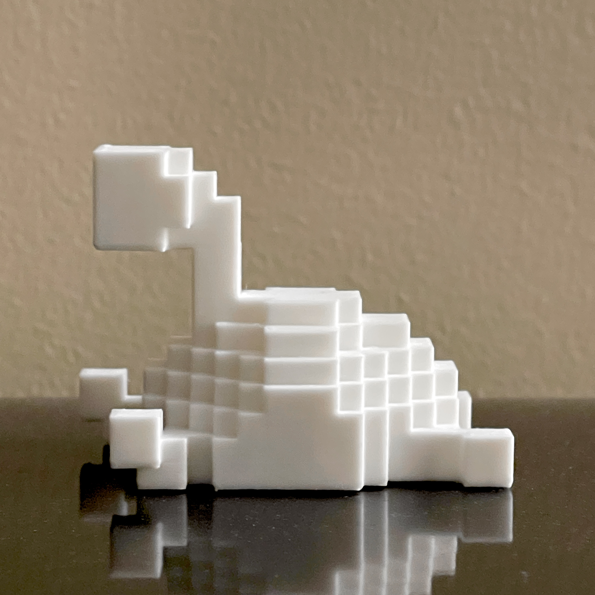
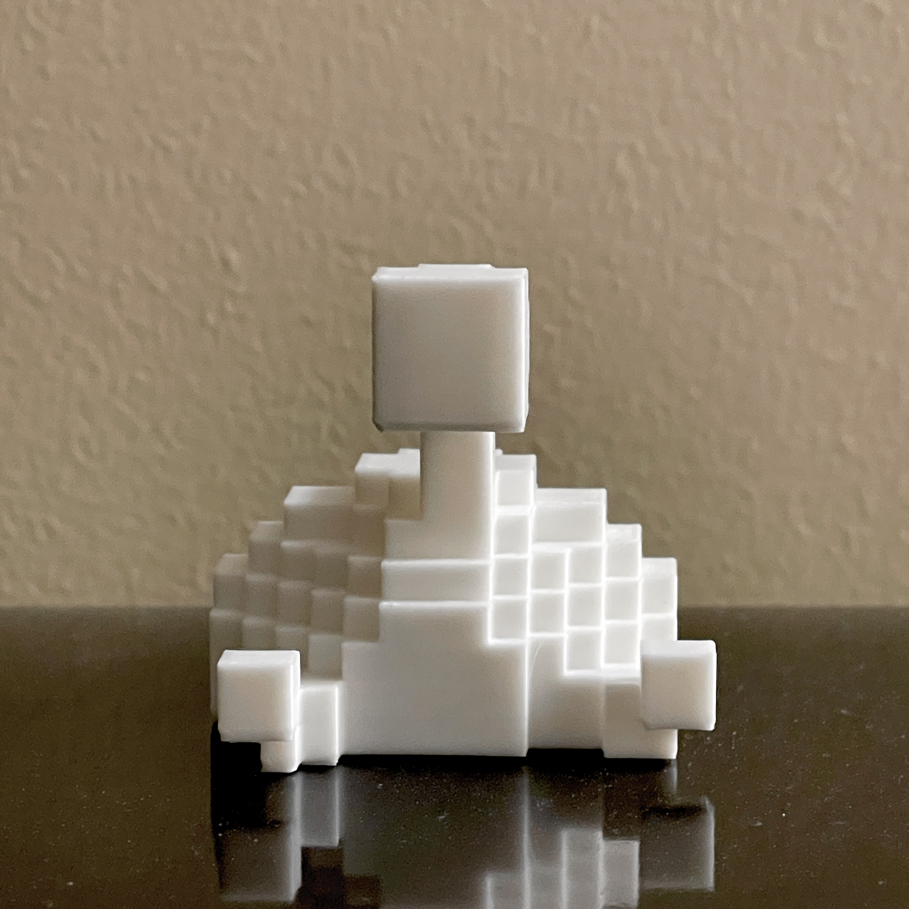
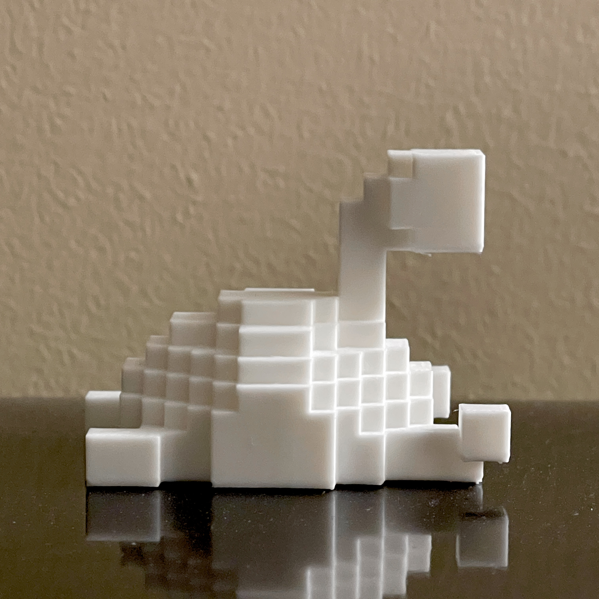
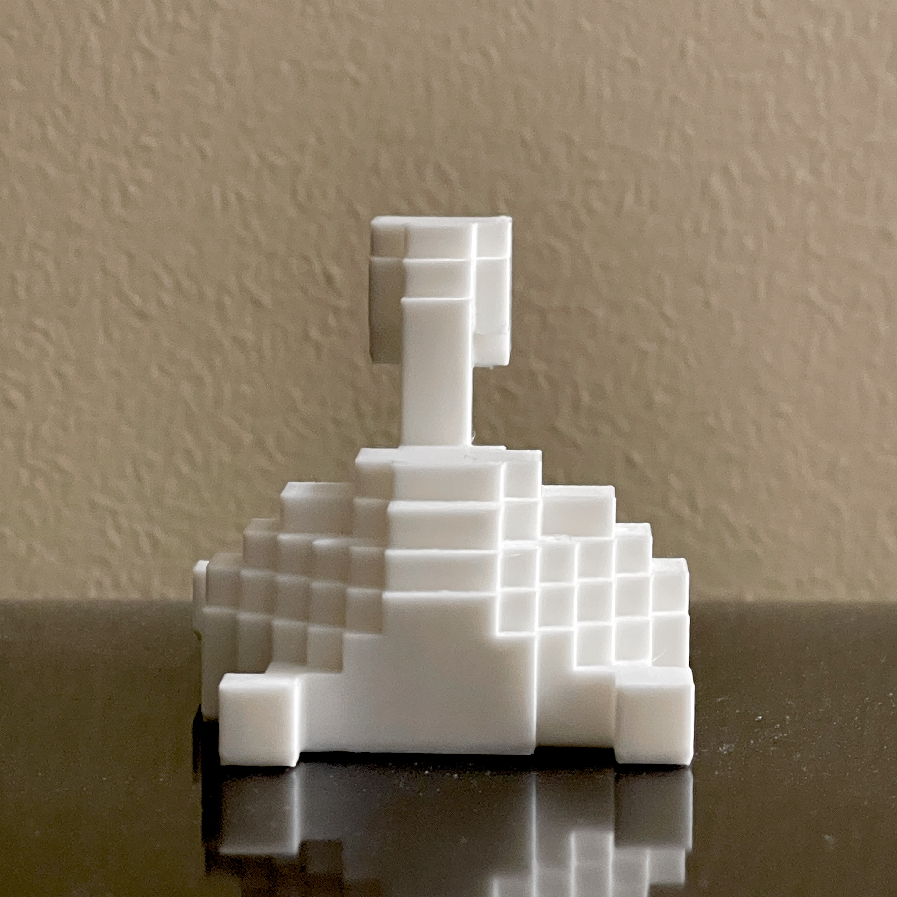
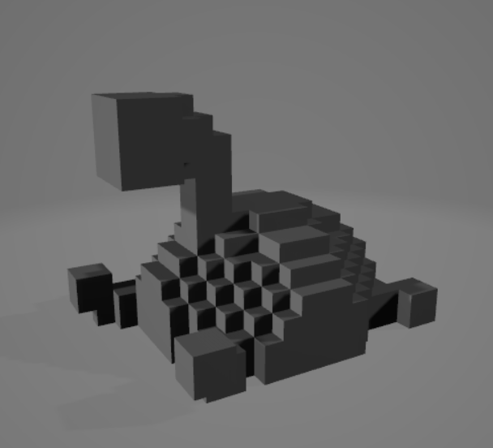
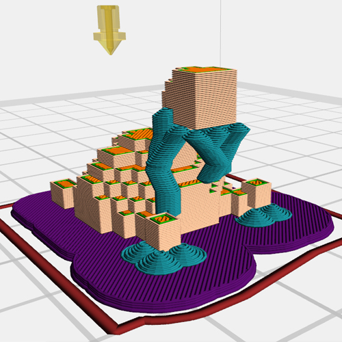
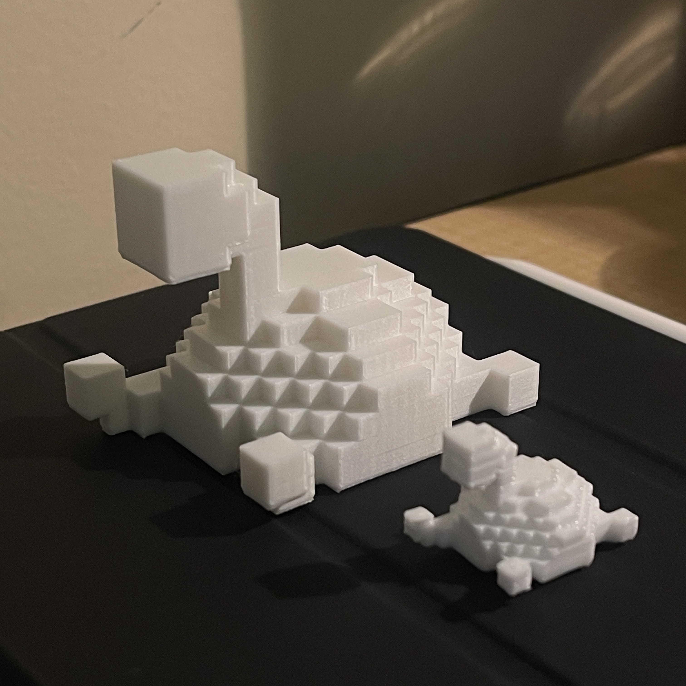

Final Print of my sculpture I built in Minecraft. It was really cool learning about how we could take something we built in a game and transfer it into another software, and eventually into a printer. I did not like the process of removing the supports, but I really enjoyed this unit. I plan to paint both my final draft and my first draft shuckles when I get the time.



Screenshot of my shuckle STL file in a 3D file viewer
Screenshot of my shuckle, sliced and with supports, in FlashPrint 5
Comparison of the final draft print and the in-class draft print